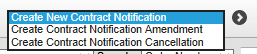

Creating Notification Records
In order to submit contract notifications electronically from , you first need to create a contract notification record for the relevant contract. Contract notification records in can come from various different sources. A relevant contract could be represented by:
- A subcontract.
- A purchase order.
- A subcontract order.
- A subcontractor (ongoing contract).
After you have created the contract notification, you can submit it electronically; see Submitting Contract Notifications.
To create a notification record for a subcontract:
- Set up the subcontract details in Subcontract Maintenance.
- If the RCT-able field is displayed, ensure it is set correctly.
- Leave the Ongoing Contract box uned. (If the subcontractor has ongoing contract details recorded and the subcontract forms part of that ongoing contract, no separate contract notification is required.)
- For electronic notification, leave the Contract ID field blank.
- The Contract Notification Method field will show as 'Manual' until the notification has been submitted.
- You can enter the start and end dates at this point, or later on the Contract Notification Workbench.
- Go back to the Subcontract Maintenance browse.
- Use the Create New Contract Notification action to add a record for the subcontract to the Contract Notification Workbench.

You can also use Subcontract RCT Details Review/Update to create the notification record.
To create a notification record for a subcontract order or purchase order:
- Enter a subcontract order, or a purchase order for a that is linked to a subcontractor account, in Procurement.
- Commit the order.
This assumes that is set up to create the notification record when the order is committed. If is not set up this way:
- For orders paid through Subcontract Ledger you will need to create the notification record using the Create New Contract Notification action on Subcontract RCT Details Review/Update.
- For orders paid through , the contract notification needs to be done outside of , and the details recorded manually on the order or the first invoice.
To create a notification record for an ongoing contract:
- Set up the subcontractor record (see Subcontractor RCT Details).
- Go to Subcontractor RCT Details Review/Update.
- Use the Create New Contract Notification action.
Configuration
Any subcontract record which is not a Relevant Contract (but which is for an RCT registered subcontractor) would need to be flagged as such by setting the RCT-able field to N: this will then allow payments on that subcontract without following RCT rules in the same way as for a subcontractor who has the tax scheme set as X for exempt. (To display the RCT-able field, the SC parameter SBSTAX needs to be set to Y, and the SY parameter TERMCODE needs to be set to %IRE.)